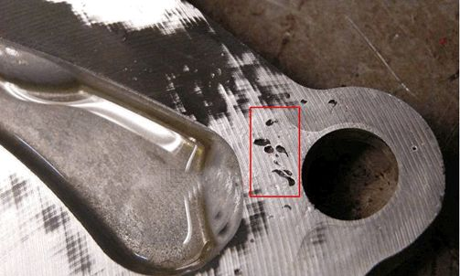
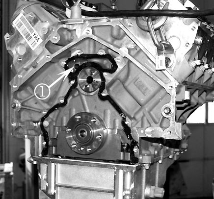
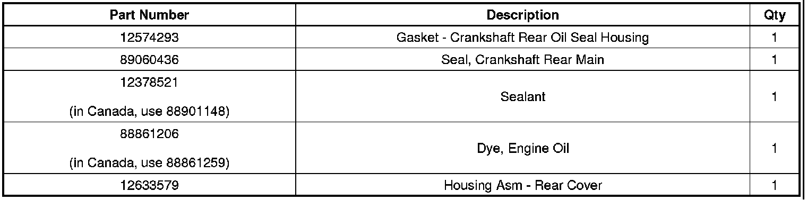
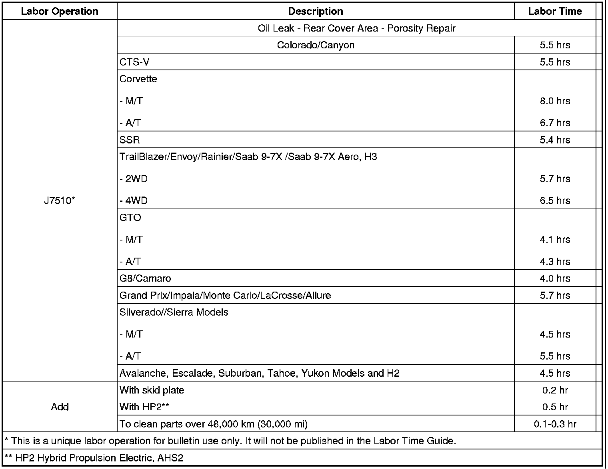
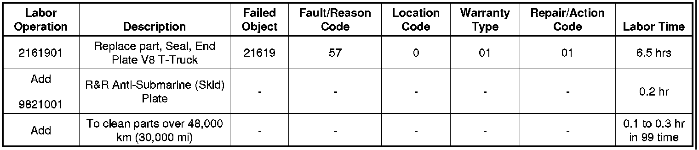

Engine - Oil Leaks From Rear Cover
TECHNICALBulletin No.: 05-06-01-034L
Date: July 23, 2010
Subject: 5.3L, 5.7L, 6.0L, 6.2L, 7.0L - Engine Oil Leak at Rear Cover Assembly Area (Engine Block Porosity RTV Repair Procedure)
Models:
2004-2007 Buick Rainier
2008-2009 Buick LaCrosse Super, Allure Super (Canada Only)
2005-2011 Cadillac CTS-V
2007-2011 Cadillac Escalade, Escalade ESV, Escalade EXT
2003-2009 Chevrolet TrailBlazer
2003-2011 Chevrolet Corvette
2004-2006 Chevrolet SSR
2005-2011 Chevrolet Silverado, Silverado SS
2006-2007 Chevrolet Monte Carlo SS
2006-2009 Chevrolet TrailBlazer SS, Impala SS
2007-2011 Chevrolet Avalanche, Suburban, Tahoe
2009-2010 Chevrolet Colorado Pickup
2010-2011Chevrolet Camaro
2003-2009 GMC Envoy
2003-2011 GMC Sierra
2004-2005 GMC Envoy XUV
2007-2011 GMC Yukon XL, Yukon Denali, Yukon XL Denali
2009-2011 GMC Canyon
2004-2006 Pontiac GTO
2005-2008 Pontiac Grand Prix GXP
2008-2009 Pontiac G8 GT
2009 Pontiac G8 GXP
2005-2009 Saab 9-7X 5.3i
2008-2009 Saab 9-7X Aero
2003-2010 HUMMER H2
2006-2010 HUMMER H3
with 5.3L, 5.7L, 6.0L, 6.2L, 7.0L VORTEC(TM) GEN III or GEN IV V8 Engine (All Aluminum Block) (RPOs L33, LC9, LH6, LH8, LH9, LM4, LS4, LS1, LS6, L76, L77, LFA, LZ1, LS2, L92, L94, L99, L9H, LS3, LS9, LSA, LS7)
Supercede:
This bulletin is being revised to add the 2011 model year and update the Warranty Information for the Corvette. Please discard Corporate Bulletin Number 05-06-01-034K (Section 06 - Engine/Propulsion System).
Condition
Some customers may comment on an engine oil leak.
Cause
Upon initial diagnosis, it may be determined that the leak is coming from the rear cover gasket. This condition may be caused by engine block porosity on the sealing surface. This issue pertains to aluminum block applications only.
Correction
Follow the steps for Oil Leak Diagnosis in SI to determine the source of the leak. If the leak has been diagnosed as coming from the engine rear cover assembly, refer to Engine Rear Cover Replacement in SI and remove the engine rear cover assembly. Inspect the engine block and engine rear cover for porosity on the mating surfaces.
- If porosity is found on the engine rear cover (see illustration below), replace the engine rear cover assembly, GM P/N 12633579.
- If porosity is found on the engine block, use the following procedure to apply RTV to repair the engine block porosity.
The porosity issue is in the gasket sealing surface at the top of the cover, near the high pressure oil crossover port. Refer to the picture below. The oil leaks by the gasket and runs down the side of the cover, and may appear to be a leak at the t-joint area of the cover. The fix is to replace the cover with GM P/N 12633579. Also, if porosity is found anywhere on the sealing surface of the engine block, use the following procedure to apply RTV to repair the engine block porosity. Refer to the illustration below.


Important
Clean any residual oil from the block and cover before applying the sealant in the next step.
1. Wipe a small amount of RTV, P/N 12378521 (in Canada, use P/N 88901148), onto the surface using a plastic scraper to fill the porosity.
2. Remove any excess RTV material, especially from inside the high pressure oil passage. Refer to #1 in the above illustration.
3. The joint may be closed immediately after applying the RTV. Total joint time after the RTV has been applied must be under 20 minutes.
Important
Refer to Engine Rear Cover Replacement in SI and follow the tightening specifications and sequence.
4. Reinstall the engine rear cover using a new gasket and a new crankshaft rear main seal. Refer to Engine Rear Cover Replacement in SI.
Parts Information
Important
For Saab (U.S.) only, use P/N 88861206 - Engine Oil Dye (U.S.) or equivalent.

Warranty Information (excluding Saab U.S. Models)
For vehicles repaired under warranty, use:

Warranty Information (Saab U.S. Models)

For vehicles repaired under warranty, use the table.

Disclaimer